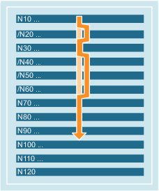

NC-Sätze, die nicht bei jedem Programmlauf ausgeführt werden sollen, können für die Abarbeitung ausgeblendet werden. Anwendung findet diese Funktion z. B. beim Testen bzw. Einfahren neuer Programme.
Die Sätze, die ausgeblendet werden sollen, werden mit dem Zeichen "/" (Schrägstrich) vor der Satznummer gekennzeichnet. Es können auch mehrere Sätze in Folge ausgeblendet werden. Die Anweisungen in den ausgeblendeten Sätzen werden nicht ausgeführt, das Programm wird mit dem jeweils nächsten nicht ausgeblendeten Satz fortgeführt.
Beispiel:
| Programmcode | Kommentar |
|---|---|
| N10 … | ; wird abgearbeitet |
| /N20 … | ; ausgeblendet |
| N30 … | ; wird abgearbeitet |
| /N40 … | ; ausgeblendet |
| /N50 … | ; ausgeblendet |
| /N60 … | ; ausgeblendet |
| N70 … | ; wird abgearbeitet |
| ... |
Sätzen können Ausblendebenen (max. 10) zugeordnet werden, die über die Bedienoberfläche oder das PLC-Anwenderprogramm aktivierbar sind.
Die Zuordnung erfolgt im NC-Programm durch Voranstellen eines Schrägstrichs, gefolgt von der Nummer der Ausblendebene. Pro Satz kann nur eine Ausblendebene angegeben werden.
Beispiel:
| Programmcode | Kommentar |
|---|---|
| / ... | ; Satz wird ausgeblendet (1. Ausblendebene) |
| /0 ... | ; Satz wird ausgeblendet (1. Ausblendebene) |
| /1 N010... | ; Satz wird ausgeblendet (2. Ausblendebene) |
| /2 N020... | ; Satz wird ausgeblendet (3. Ausblendebene) |
| ... | |
| /7 N100... | ; Satz wird ausgeblendet (8. Ausblendebene) |
| /8 N080... | ; Satz wird ausgeblendet (9. Ausblendebene) |
| /9 N090... | ; Satz wird ausgeblendet (10. Ausblendebene) |
| Hinweis |
Änderungen der auszublendenden Ebenen sind nur im STOP/Reset-Zustand der Steuerung möglich. |
| Hinweis |
Wie viele Ausblendebenen nutzbar sind, ist abhängig von einem Anzeige-Maschinendatum. |
| Hinweis |
Das Ausblenden von Sätzen ist auch bei einem Satzsuchlauf aktiv. |
| Hinweis |
Veränderbare Programmabläufe können auch durch den Einsatz von System- und Anwendervariablen für bedingte Sprünge erzeugt werden. |
Siehe auch:
Sätze und Satzkomponenten